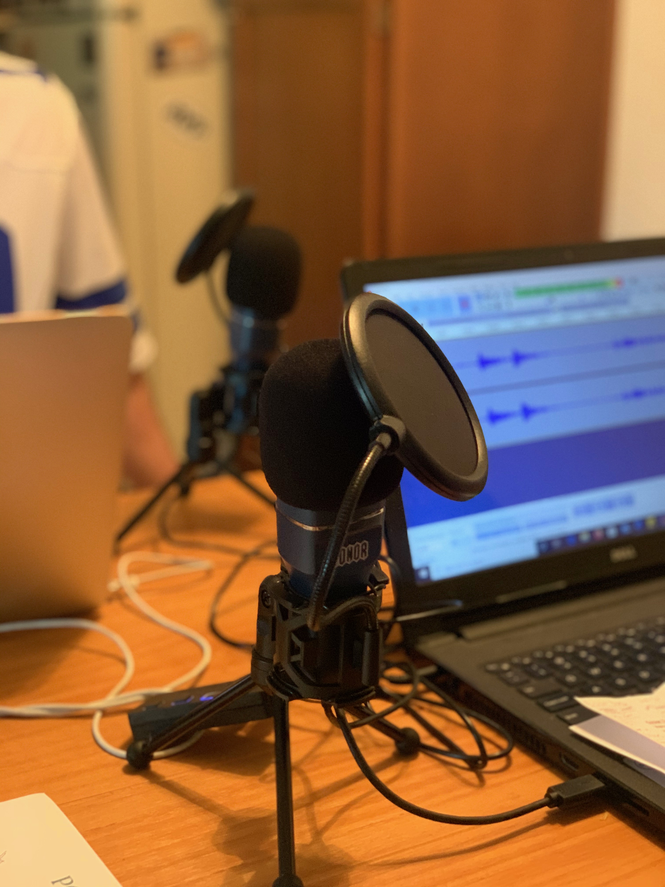

Daniel Allison
From Los Angeles and considers himself to be the O.G. Savage. His friends call him Daniel, but in the streets, they call him Oso de chocolate.

Bobby Stroup
Texas born and raised, Bobby loves watching football and completing food challenges. Also, he may have some ridiculous opinions, but that doesn't mean he's wrong.

The Podcast
Dial-Up Podcast was born out of a desire to slow things down by connecting people through comedic conversations. Kick back, relax, and enjoy the ride.